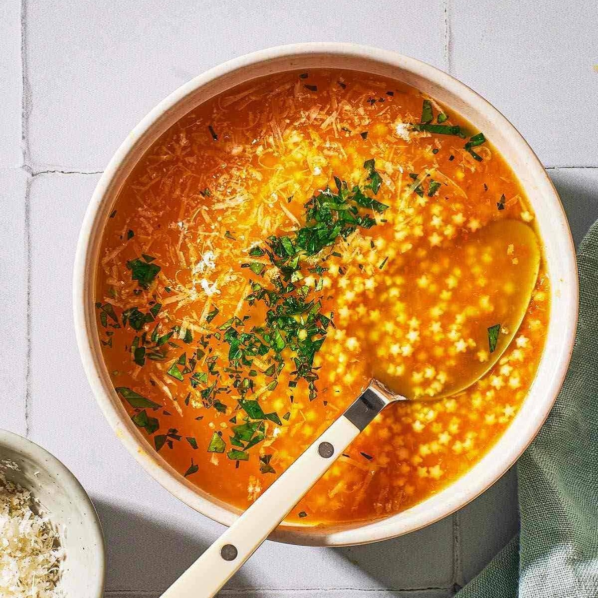

Ingredients:
Broth (vegetable, chicken, or beef) Assorted vegetables (carrots, celery, onions, etc.) Garlic, minced Fresh or dried herbs (thyme, rosemary, bay leaves) Salt and pepper to taste Optional: protein (chicken, beans, lentils) Olive oil for sautéing
Instructions:
Heat olive oil in a pot and sauté minced garlic until fragrant. Add assorted vegetables and cook until slightly softened. Pour in the broth of your choice and bring the mixture to a simmer. Add fresh or dried herbs, salt, and pepper to taste. If desired, add protein such as cooked chicken, beans, or lentils. Simmer the soup until the vegetables are tender and the flavors meld. Adjust seasoning if necessary, and serve hot.
Soup
Author
Warm up with a homemade soup using this easy recipe. Bursting with fresh ingredients, aromatic herbs, and savory broth, it's perfect for a quick lunch or cozy dinner. Customize with your favorite veggies and protein for a comforting and nourishing experience.
Broth (vegetable, chicken, or beef) Assorted vegetables (carrots, celery, onions, etc.) Garlic, minced Fresh or dried herbs (thyme, rosemary, bay leaves) Salt and pepper to taste Optional: protein (chicken, beans, lentils) Olive oil for sautéing
Instructions:
Heat olive oil in a pot and sauté minced garlic until fragrant. Add assorted vegetables and cook until slightly softened. Pour in the broth of your choice and bring the mixture to a simmer. Add fresh or dried herbs, salt, and pepper to taste. If desired, add protein such as cooked chicken, beans, or lentils. Simmer the soup until the vegetables are tender and the flavors meld. Adjust seasoning if necessary, and serve hot.